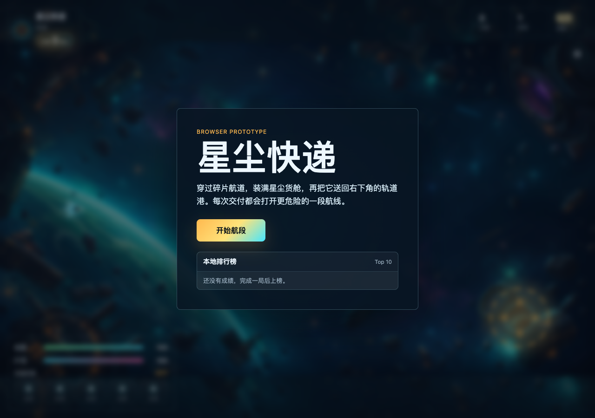
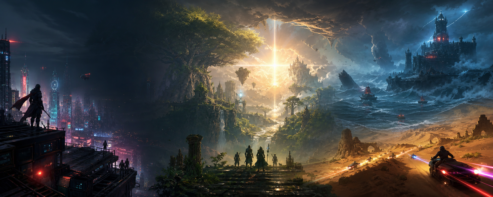
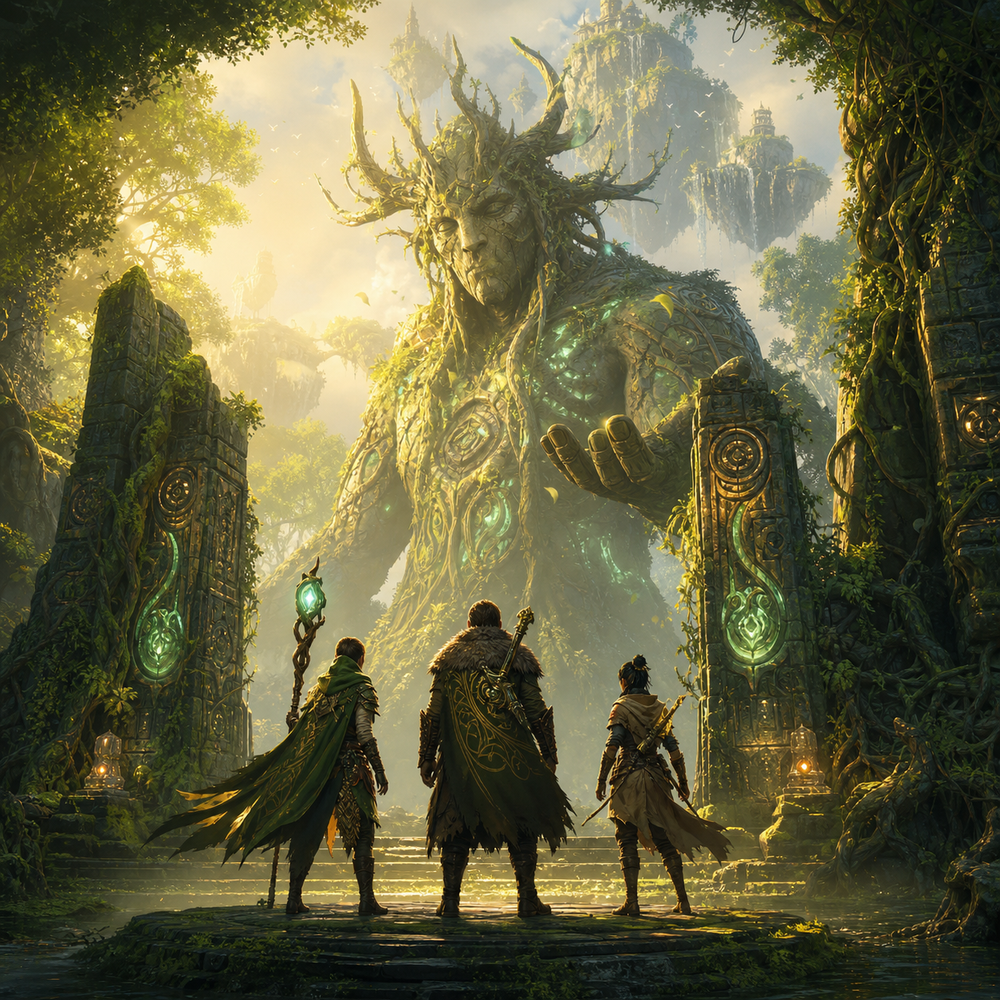
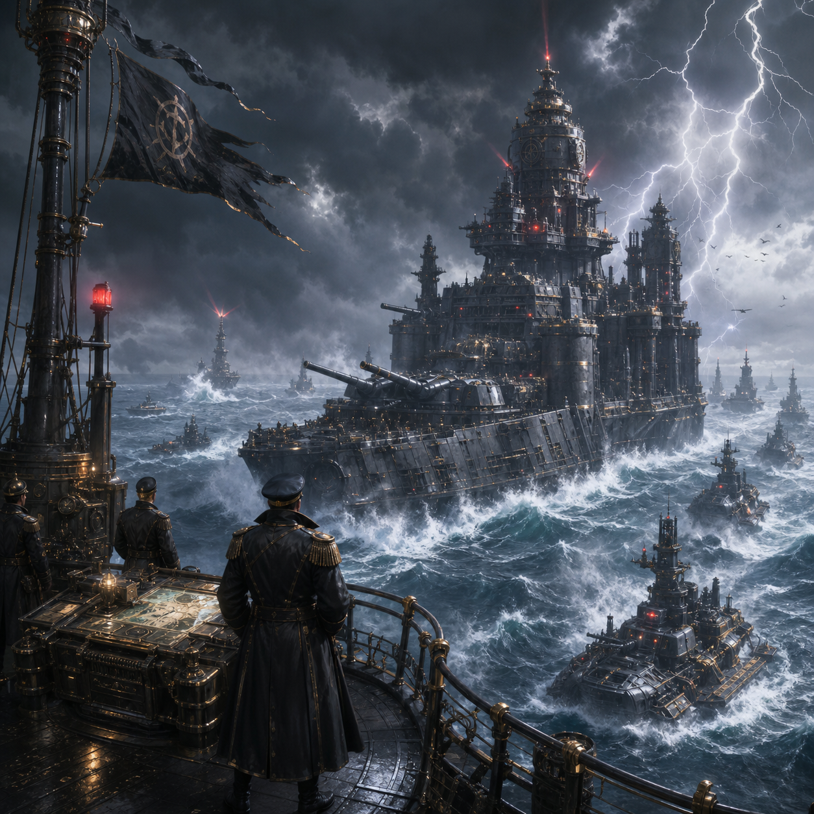
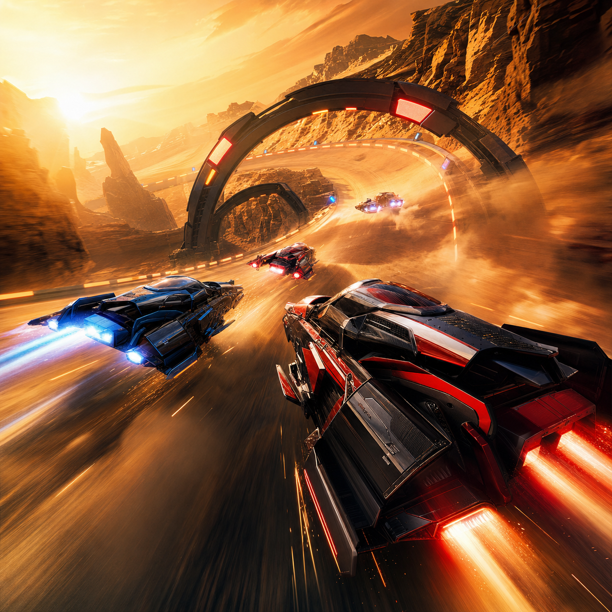
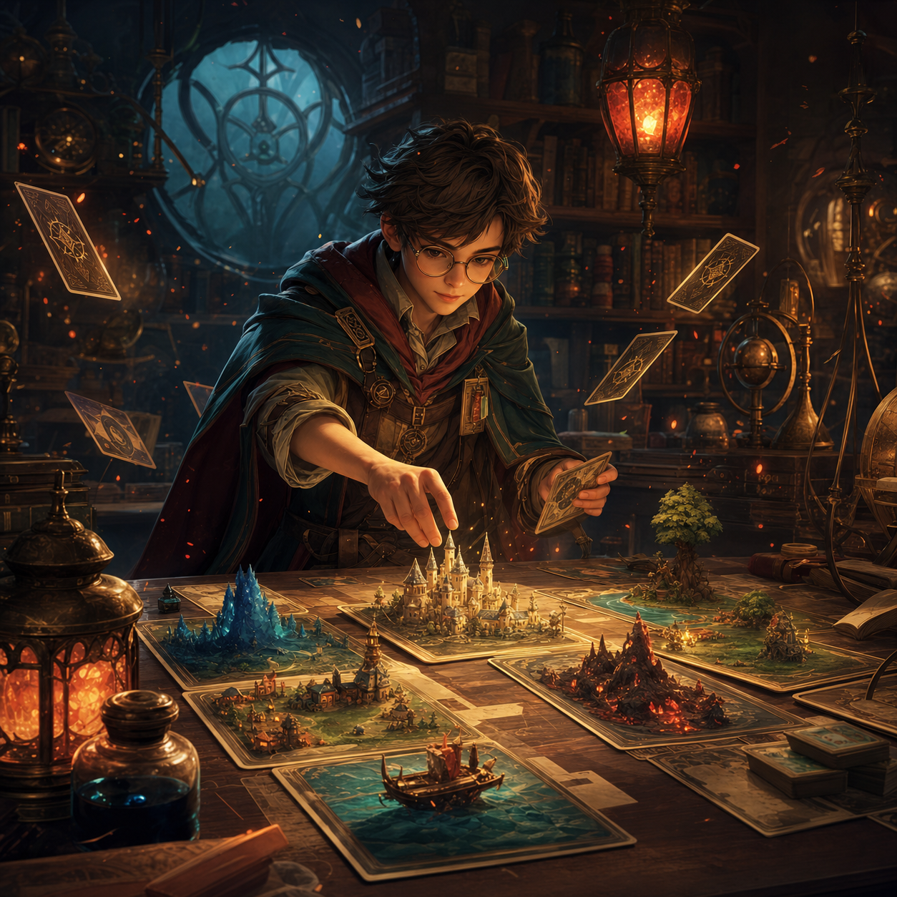

6
展示作品
3
核心赛道
18
跨职能小队
24/7
社区反馈循环
游戏作品
正在塑造的世界
动作 / PC / 主机
Night Circuit
穿过无人机搜索灯与雨夜高架，在垂直城市里完成潜入、追逐和精确反击。

合作冒险 / PC
Verdant Oath
三人小队探索会呼吸的古代森林，与巨像守护者一起修复破碎群岛。

海战策略 / PC
Iron Tide
调度移动要塞舰队，在风暴、补给线与炮火角度之间争夺海域控制权。

竞速 / 主机
Solar Rush
磁悬浮赛车穿越沙漠峡谷，围绕漂移蓄能、赛道选择与车队配合展开。

卡牌策略 / 移动端
Ember Archive
在温暖的档案工坊里组合卡组、锻造微型王国，并让每次选择改变战局。
最新动态
开发日志与社区消息
《星尘快递》浏览器版本已经上线
飞船航行、星尘收集、能量护盾、改装阶数和本地排行榜已经可以直接体验。
《Night Circuit》移动系统完成第二轮手感调校
冲刺、滑索与墙面转向现在共享同一套动量曲线，战斗镜头也同步更新。
森林守护者从单体 Boss 改为可交互地貌
《Verdant Oath》的巨像将参与解谜、战斗掩护与剧情抉择。
《Solar Rush》开启赛道读秒与回放系统内部测试
团队正在验证多人房间稳定性、计时精度和观赛镜头节奏。
赛事生态
从核心玩法开始设计观赛体验
竞技作品从原型阶段就同步考虑可读性、回放、数据面板与社区赛事工具，让玩家能玩懂，也能看懂。
Q3
Solar Rush 竞速表演赛
Q4
Night Circuit 潜入挑战周
2027
Iron Tide 社区舰队联赛
工作室方法
小队负责制，长期运营心智
每个项目由制作、玩法、叙事、美术、技术和社区组成稳定小队。我们用可玩的原型验证想法，再把玩家反馈带回版本节奏。
玩法先行
每个系统必须能被玩家快速理解，并在高水平下保留深度。
视觉识别
世界观、角色轮廓和界面语言共同服务游戏记忆点。
社区共创
公开测试、版本说明和创作者工具构成长期沟通机制。
加入我们